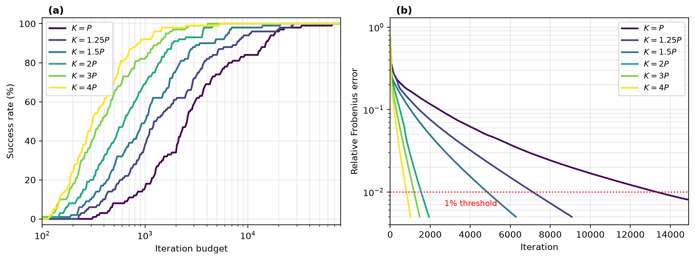
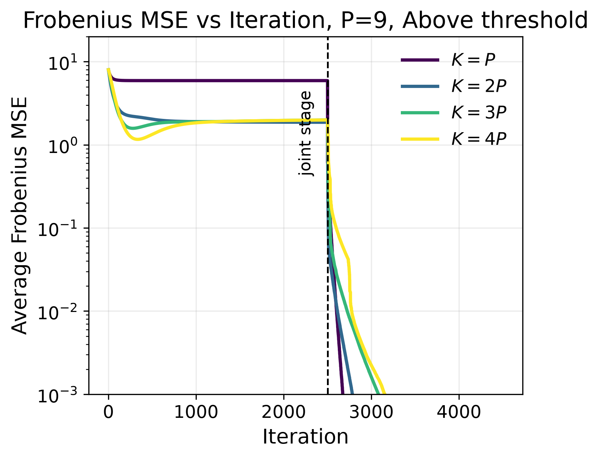

1School of Computer Science and Engineering, The Hebrew University of Jerusalem
arXiv preprint arXiv:2511.01605

Toeplitz covariance estimation is a classical problem in statistical signal processing, yet the geometry of the Gaussian maximum-likelihood objective remains only partially understood. Recent algorithms, including Newton-type, majorization-minimization, and gradient-based methods, indicate that the nonconvex problem can often be globally solved when the number of samples is sufficiently large, but they also reveal a difficult computational landscape. In this work, we study this phenomenon through an overparameterized Carathéodory representation of positive definite Toeplitz covariance matrices, which parameterizes the covariance by the frequencies and amplitudes of a set of steering vectors. A simple example shows that, for any uniform frequency grid, optimizing only the amplitudes can leave a strictly positive error even in the population setting, which motivates optimizing the frequencies together with the amplitudes. Our main result proves that this nonlinear parameterization adds no stationary points to the Toeplitz maximum-likelihood problem: for any sample covariance, every stationary point that produces a positive definite covariance matrix gives a stationary point of the original problem. In the population setting, every such stationary point therefore recovers the true Toeplitz covariance. We also prove that gradient descent on this parameterization converges to the true covariance in the population setting, and to the unique maximum likelihood estimate when the sample covariance is close enough to the true covariance. These results do not require overparameterization. Numerically, overparameterization speeds up gradient descent and gives a more accurate estimate for a fixed number of iterations.
Every positive definite Toeplitz covariance is a non-negative combination of steering-vector outer products, the Carathéodory decomposition. We parameterize the covariance by \(K \ge P\) such atoms, \(\hat{\mathbf C} = \sum_{k=1}^{K} s(a_k)\,\mathbf v(\omega_k)\mathbf v(\omega_k)^H\), with softplus amplitudes \(s(a_k)\), and we minimize the Gaussian negative log-likelihood over the amplitudes and the frequencies by gradient descent. With \(K > P\) the model is overparameterized.
Fixing the frequencies on a grid and optimizing only the amplitudes, as in SPICE-type methods, can fail. For a single source halfway between two grid points, no choice of non-negative amplitudes on the grid represents the true covariance, even in the population setting and with \(K > P\) atoms. Optimizing the frequencies as well removes this error.

Our main result is that this nonlinear parameterization adds no stationary points to the Toeplitz maximum-likelihood problem: for every \(K \ge P\) and any sample covariance, every stationary point that produces a positive definite covariance gives a stationary point of the original problem. In the population setting, every such stationary point recovers the true covariance. The covariance iterates of gradient descent converge to the true covariance in the population setting, and to the unique maximum likelihood estimate when the sample covariance is close enough to the true covariance.
The theory already holds at \(K = P\). In the experiments, overparameterization speeds up gradient descent. In the population setting, over 100 random covariances, every run converges, and the median number of iterations to a 1% relative error drops from about 2,550 at \(K = P\) to about 310 at \(K = 4P\). With finite samples, a larger \(K\) reaches the likelihood of a reference maximum likelihood estimate much faster, and the final MSE is similar for all \(K\) and close to the Cramér–Rao bound.
@article{busbib2025optimization,
title = {The Optimization Landscape of {Carath\'eodory} Decomposition of {Toeplitz} Covariances},
author = {Busbib, Daniel and Wiesel, Ami},
journal = {arXiv preprint arXiv:2511.01605},
year = {2025}
}